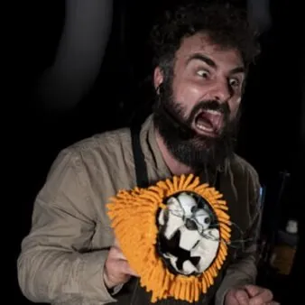

dom 8 nov · dalle 17:00
FILA A TEATRO 2026-2027 - XII edizione: Officina Prometeo
OFFICINA PROMETEO Divisoperzero (Lazio) Spettacolo Vincitore del Premio In – Box Verde 2024/2025 Questa è la storia di come furono inventati tutti gli animali, compresa quella strana bestia senza corna o zanne capace di creare cose mirabolanti come enormi città pullulanti di…
 Indicazioni
Indicazioni
- Costi e prenotazioni
- Costo non indicato · Prenotazione non indicata
- Programma
- Programma da verificare. Apri la fonte ufficiale per orari e possibili aggiornamenti.
- In caso di maltempo
- Nessuna indicazione specifica pubblicata.
- Note
- Acquisito automaticamente dalla fonte.
L’EVENTO
Descrizione completa
FILA A TEATRO 2026 – 2027
XII edizione, da ottobre 2026 a marzo 2027
Fila a Teatro prosegue il suo viaggio e approda nei teatri, e non solo, con 17 spettacoli per ragazzi e famiglie. Non mancano le proposte dedicate ai piccolissimi con 3 appuntamenti. In calendario 5 prime regionali, compagnie da diverse regioni italiane e giovani talenti, laboratori interattivi, eventi dedicati, incontri curiosi e tante sorprese…
Un progetto ricco e articolato, che consente di dare continuità agli obiettivi centrali della rassegna: allentare il confine attore-spettatore, offrire spettacoli di atmosfera e momenti di interazione per crescere, imparare, meravigliarsi e costruire insieme nuovi immaginari .
L’approccio inclusivo, volto a ricevere e ospitare persone che presentano specifiche fragilità, caratterizza questa parte della rassegna che nel teatro di Zoppola avvia l’esperienza dell’accoglienza per il pubblico “sensibile” nel segno della cultura del rispetto, della cura e dell’ascolto.
OFFICINA PROMETEO
Divisoperzero (Lazio)
Spettacolo Vincitore del Premio In – Box Verde 2024/2025
Questa è la storia di come furono inventati tutti gli animali, compresa quella strana bestia senza corna o zanne capace di creare cose mirabolanti come enormi città pullulanti di vita e monumenti da lasciare a bocca aperta: gli umani. Il mito di Prometeo parla della natura stessa dell’essere umano, di cosa lo rende quello che è: un animale unico nel suo genere, capace di ragionamenti profondi, contorti, come quello che lo porta a chiedersi: “chi sono?”. Parla del rapporto complicato con la tecnica, che dona all’uomo un potere infinito ma, al tempo stesso, lo rende dipendente dalle sue stesse invenzioni. Sulla scena un burattinaio-narratore-artigiano da voce a tutti i protagonisti del racconto: Afrodite, Ares, Efesto... fino al più grande di tutti, Zeus, che incarica suo cugino Prometeo di popolare la terra, i cieli e i mari con esseri di tutti i generi. Prometeo usa tutto il suo ingegno per assemblare creature in gran varietà, compreso l’essere umano, che per la sua intraprendenza infastidisce Zeus...
Età consigliata : 4+
Maggiori info, biglietti e promozioni su www.filaateatro.it
Scarica il programma completo
IL PROGRAMMA
Programma e orari
Appuntamenti raccolti dalle fonti elencate. Dove manca un orario, non è ancora disponibile in questa scheda.
Programma pubblicato
- Dal 2026-11-08 al 2026-11-08
INFORMAZIONI UTILI
Prima di partire
- Controllare la fonte prima di partire.
ORGANIZZAZIONE